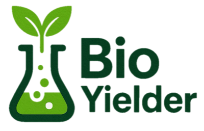

Read from Excel
Sample name:
Fermentation vessel:
Harvest date:
Extraction date:
Fermentation volume (L):
Harvest volume (L) [optional]:
OD at harvest:
Wet paste weight (g):
Dry paste weight (g):
Extracted paste weight (g):
Final polymer weight (g):
Dry polymer per culture volume:
–
Normalized dry polymer per OD:
–
Yield from extracted paste:
–
Export data to Excel